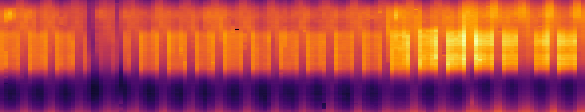
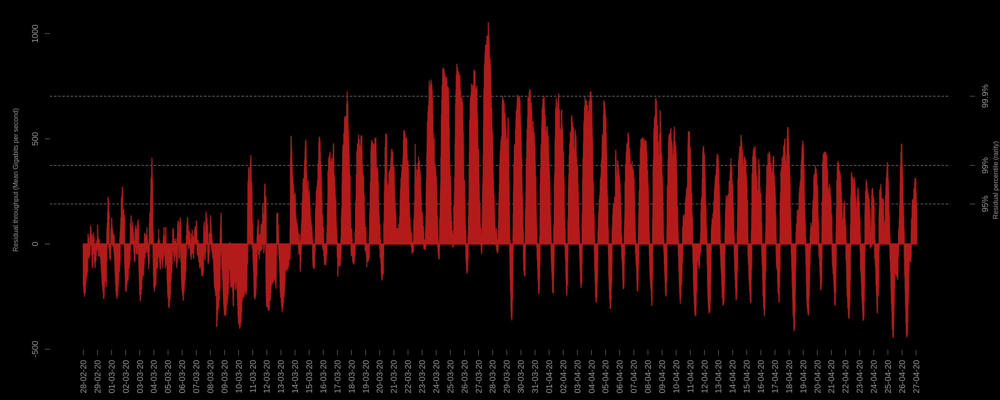
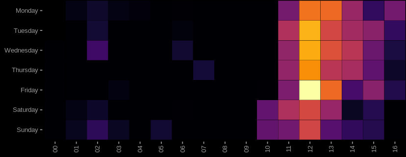
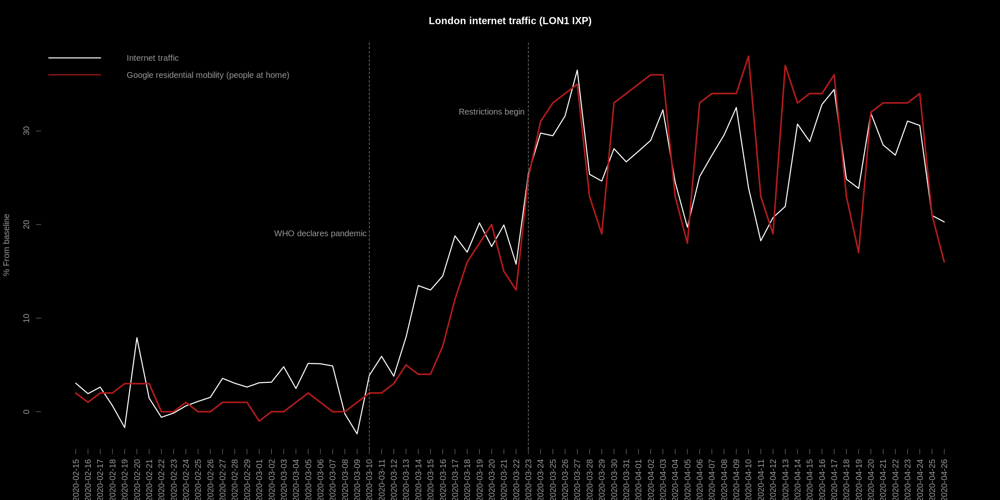
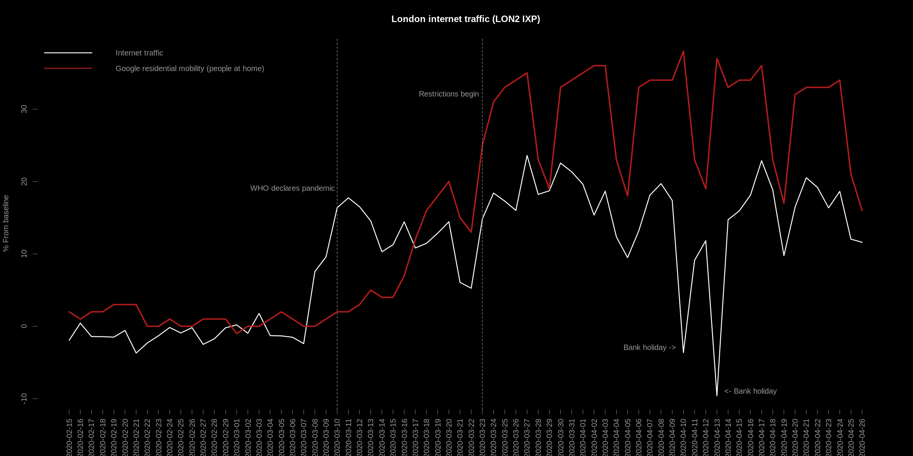
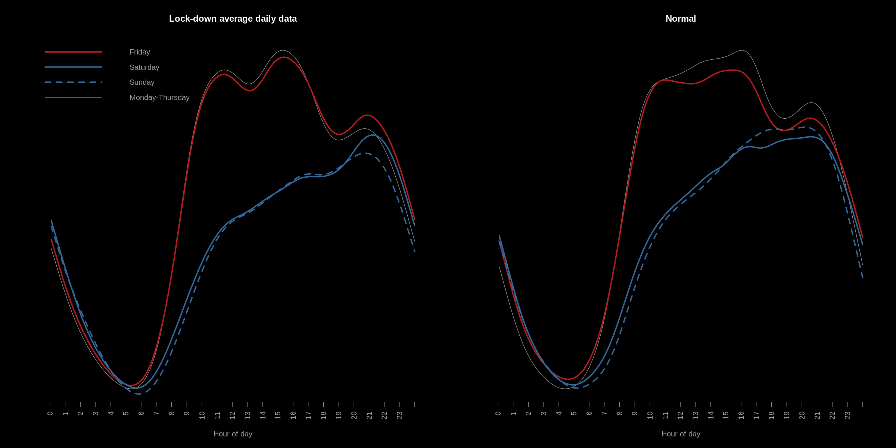
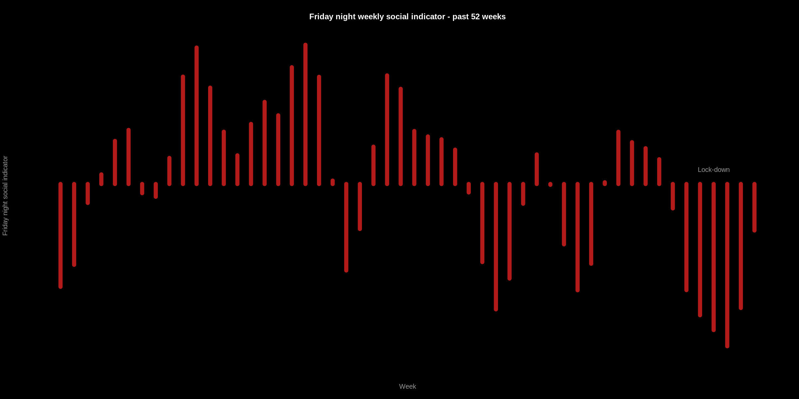

For a long time now, I've been fascinated with extracting indicators of collective human behaviour from data. One of the coolest things I've ever seen is this from Twitter: "We can use billions of public Tweets to detect events and visualize the synchrony they generate at a large scale.". In that post, large-scale human behaviour leaves a footprint in very simple data - the number of tweets occurring at different times in different locations.
Some time ago, in my previous job, I was researching how internet traffic volume data might reveal patterns of human behaviour and how this might be used to form a set of real-time economic indicators: Extracting social-economic signals from internet traffic data. I was curious to see how this data looks now, given the current COVID-19 pandemic.
In this post, I'm going to take a look at the volume of internet traffic occurring at an Internet eXchange Points (IXP) in London, operated by LINX. LINX provide a network statistics dashboard, which shows the amount of data observed every 5 minutes (in Gigabits per second) for each of their IXPs. I re-used some of my old code available on GitHub to take a recent snapshot of this interesting dataset.
The data itself is very simple - a time series of data-points (timestamp, volume), where volume is the amount of internet traffic observed flowing through the internet exchange point in the past 5 minutes.
I've been looking at 2 LINX IXPs in London: LON1 and LON2. Each of these exchanges have a number of connected "peers"/networks such as various internet backbone providers and content delivery networks (CDNs). A complete list of connected peers can be seen on PeeringDB for LON1 and LON2 respectively.
These IXPs exchange a very large volume of internet traffic -- Although a small fraction of overall internet traffic. So the network statistics can be seen as a window/proxy-view of total internet traffic volume.
Since this is time-series data, the usual method of visualisation would be a form of line-graph. As an alternative, I've plotted the data as a heat-map. This shows the amount of internet traffic on the LON1 exchange from November 2019 up until now (start of May 2020):
On the vertical-axis, there are 288 pixels for each day (24 hours of 5 minute samples). The horizontal-axis contains 1 column of 288 pixels for each day starting from November 2019 until now.
The most notable feature in the above plot is the increase in activity during recent weeks. This is due to enforced mobility restrictions/people working from home.
If you right-click, open the image in a new tab and zoom in, there are a number of smaller events visible: darker patches where people stop using the internet to watch news-broadcasts, and a small dip in traffic occurring at 8pm each Thursday..
Using this data, I developed a model using Singular spectrum analysis, and then used the model to predict what the internet traffic *should be* vs the actual observations. The result is a new time-series showing the error of my model - which can be interpreted as anomalous internet traffic (traffic which the model was not expecting):
The above plot shows the error (residuals) of my model for each 5-minute interval during the declared pandemic and subsequent (UK) lock-down. It shows a significant increase in traffic, which is anomalous given that these sustained levels of residuals are greater than 95% and sometimes 99% of all other residuals observed in the past.
Aggregating these residuals to daily level, we can see the anomalous increase in daily internet activity for the London LON1 exchange, shown as a heat-map - where the horizontal axis is the week of year:
...The internet traffic volume has increased during this period. That's not really surprising - since there's a whole lot of people working from home and restricted from venturing outside.
What is interesting to me is that a large-scale, collective change in day-to-day human activity manifests in simple internet traffic volume. The volume is the direct result of human interaction with the internet.
Let's take a closer look...
Recently, Google started publishing COVID-19 Mobility reports - aggregated/anonymised indicators of movement in retail, recreation, groceries and pharmacies, parks, transit stations, workplaces, and residential. The idea being that the data can "provide insights into what has changed in response to policies aimed at combating COVID-19".
It's a really interesting dataset, and offers a peek into the mountain of proprietary data that Google hold.
The dataset is formed by taking the median daily length of stay in various locations between the 3rd January - 6th February, then comparing that value (the baseline) to the observed values in recent times. This gives a percentage difference indicator - how much higher or lower a day is in terms of the expected for the different categories.
The "residential" category is an indicator of how much more or less people in a specific location are dwelling at home per day.
Using the residential mobility report for London, I compared the daily internet traffic volume from 2 London IXPs: LON1 and LON2. To do this, I followed the same methodology - I took the average/expected value for each day from the same baseline period, and then derived a percentage deviation from this baseline for the recent daily internet traffic volume observations. In addition (I'm guessing Google did something similar), I seasonally adjusted the data: internet traffic in the LON1 and LON2 exchanges starts to decrease as we head toward summer and is highest in winter by default. For the LON1 exchange, the result is:
The daily change in internet volume data is strongly related to the mobility report data - Pearson's correlation: 0.95.
This suggests that the internet traffic volume, on LON1 at least, can be used as a proxy measure for Google's residential mobility report. Furthermore, the data is real-time, updated every 5 minutes.
The same relationship does not hold for the other London IXP (LON2). Whilst it is still highly correlated, there is a notable difference during the recent bank holiday period - a significant drop in traffic: 
This is likely due to the network topology of the exchanges: LON1 may contain a broader mix of peers. In-fact, it is the busiest of the exchanges. Whereas, LON2 may contain a higher proportion of peers which carry "work" related data, and hence the notable drop during the holiday period.
From these comparisons, it is clear that there exists weekly seasonality in both indicators: the weekends tend to have lower internet usage and lower numbers of people at home. We can explore that in finer detail with the internet use data - especially since it is higher-frequency...
For me, the most interesting thing about the internet traffic volume data is that it is real-time. When I first starting looking at this data, I was fascinated to see large-scale human behaviour show up minute-by-minute in such a high level, aggregated time-series.
For instance, as others has shown, it is possible to observe the effect of football games in internet traffic - In my blog post, even the specific attributes of the game (half time, extra time etc) manifest in the data. It's even possible to observe the effects of adverse weather conditions, political and major news events. It was even possible to see a drop in activity during general elections - which might be used as an early indicator of voter turnout... endless things!
If we average the internet volume for each hour in the day over a fixed window of say, a month, it is possible to see the usual level of internet traffic for each hour during the day. In the below 2 charts, I have done just that - The left hand plot shows average daily traffic throughout the day during London lock-down restrictions, and the right during the same baseline period as the Google mobility reports (January - February) - "normal" internet activity:
At first glance, there's not much difference: we can see the human Circadian rhythm/sleep-wake cycle, which, in it's own right is interesting: This is the "human footprint" - evidence of biological interaction with the internet, since humans and biological entities are driven by the sun. As a note: I'm guessing that the root cause of the rise in winter internet use/drop in summer use is available sunlight hours. I've also wondered how this signal might dissipate as less humans and more (non-human (influenced)) entities interact with the internet. The sinusoidal wave might flatten over time - rise of the machines?
Anyway, back to the plot:
The right hand side shows internet traffic volume under "normal" conditions. Some noteworthy features:
The left hand side shows internet traffic volume under the recent lock-down. There are a number of interesting differences with the plot on the right:
From the differences above, one of the most interesting is the flip from Friday night being the least busiest in terms of internet traffic to the most busiest. This also holds for Saturday, when compared with Sunday.
As an experiment, I've made an indicator for Friday night social activity, with the idea that on social nights - people will use the internet less, perhaps when the weather is good for instance. To do this, I compare the percentage difference in internet traffic volume at 9pm on a Friday with the volume of 9pm on Thursday:
In this plot, we can see the last 52 Friday nights according to this indicator. As expected, the recent Friday nights are not as social (Thursday night traffic is less than Friday's). Beyond the expected, this might be used as a proxy feature for the "night time economy"..
In this post, I had a look at how internet traffic has changed in London during the recent mobility restrictions. I looked at 2 Internet eXchange Points - A small window into overall internet traffic volume.
It is really interesting to see how the "human footprint" left behind in this data has evolved into a new pattern and how internet traffic is so closely related to day-to-day human activity.
"Cyberspace. A consensual hallucination experienced daily by billions of legitimate operators, in every nation, by children being taught mathematical concepts...A graphical representation of data abstracted from the banks of every computer in the human system. Unthinkable complexity. Lines of light ranged in the nonspace of the mind, clusters and constellations of data. Like city lights, receding..." William Gibson, Neuromancer, 1984.
EOF
NO CARRIER
{kind=link}